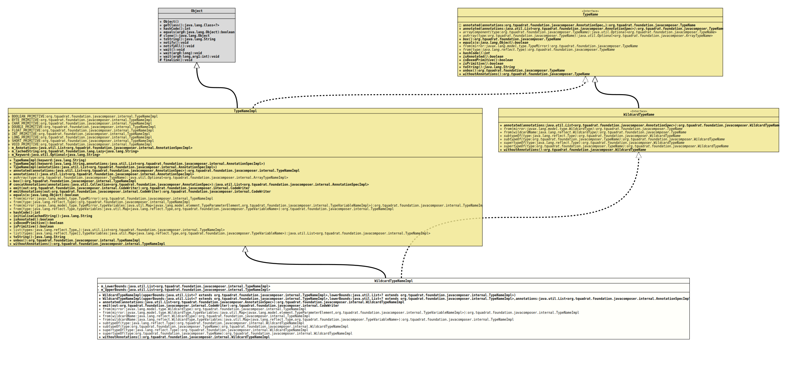

Class WildcardTypeNameImpl
java.lang.Object
org.tquadrat.foundation.javacomposer.internal.TypeNameImpl
org.tquadrat.foundation.javacomposer.internal.WildcardTypeNameImpl
- All Implemented Interfaces:
TypeName,WildcardTypeName
@ClassVersion(sourceVersion="$Id: WildcardTypeNameImpl.java 1105 2024-02-28 12:58:46Z tquadrat $")
@API(status=INTERNAL,
since="0.0.5")
public final class WildcardTypeNameImpl
extends TypeNameImpl
implements WildcardTypeName
The implementation of
TypeNameImpl
for wildcard named types.- Author:
- Square,Inc.
- Modified by:
- Thomas Thrien (thomas.thrien@tquadrat.org)
- Version:
- $Id: WildcardTypeNameImpl.java 1105 2024-02-28 12:58:46Z tquadrat $
- Since:
- 0.0.5
- UML Diagram
-

UML Diagram for "org.tquadrat.foundation.javacomposer.internal.WildcardTypeNameImpl"
{kind=link}
-
Field Summary
FieldsModifier and TypeFieldDescriptionprivate final List<TypeNameImpl> The lower bounds.private final List<TypeNameImpl> The upper bounds.Fields inherited from class org.tquadrat.foundation.javacomposer.internal.TypeNameImpl
BOOLEAN_PRIMITIVE, BYTE_PRIMITIVE, CHAR_PRIMITIVE, DOUBLE_PRIMITIVE, FLOAT_PRIMITIVE, INT_PRIMITIVE, LONG_PRIMITIVE, SHORT_PRIMITIVE, VOID_PRIMITIVE -
Constructor Summary
ConstructorsConstructorDescriptionWildcardTypeNameImpl(List<? extends TypeNameImpl> upperBounds, List<? extends TypeNameImpl> lowerBounds) Creates a newWildcardTypeNameImplinstance.WildcardTypeNameImpl(List<? extends TypeNameImpl> upperBounds, List<? extends TypeNameImpl> lowerBounds, List<AnnotationSpecImpl> annotations) Creates a newWildcardTypeNameImplinstance. -
Method Summary
Modifier and TypeMethodDescriptionfinal WildcardTypeNameImplannotated(List<AnnotationSpec> annotations) Creates a new instance for an implementation ofTypeNameas a copy of this one, but with the given annotations added.final CodeWriteremit(CodeWriter out) Emits this type name instance to the givenCodeWriter.static final TypeNameImplfrom(WildcardType wildcardName) Returns an instance ofTypeNameImplfor the given wildcard type.(package private) static final TypeNameImplfrom(WildcardType wildcardName, Map<Type, TypeVariableName> typeVariables) Returns an instance ofTypeNameImplfor the given wildcard type, with the given type variables applied to it.static final TypeNameImplfrom(WildcardType mirror) Returns an instance ofTypeNameImplfor the given type mirror.(package private) static final TypeNameImplfrom(WildcardType mirror, Map<TypeParameterElement, TypeVariableNameImpl> typeVariables) Returns an instance ofTypeNameImplfor the given type mirror, with the given type variables applied to it.static final WildcardTypeNameImplReturns a subtype for the given type.static final WildcardTypeNameImplReturns a type that represents an unknown type that extends the given type.static final WildcardTypeNameImplsupertypeOf(Type type) Returns a super type for the given type.static final WildcardTypeNameImplsupertypeOf(TypeName type) Returns a type that represents an unknown supertype of the given type.final WildcardTypeNameImplCreates a new instance for an implementation ofTypeNameas a copy of this one, but without any annotations.Methods inherited from class org.tquadrat.foundation.javacomposer.internal.TypeNameImpl
annotations, asArray, box, concatAnnotations, emitAnnotations, equals, from, from, from, from, hashCode, isAnnotated, isBoxedPrimitive, isPrimitive, list, list, toString, unboxMethods inherited from class java.lang.Object
clone, finalize, getClass, notify, notifyAll, wait, wait, waitMethods inherited from interface org.tquadrat.foundation.javacomposer.TypeName
annotated, box, equals, hashCode, isAnnotated, isBoxedPrimitive, isPrimitive, toString, unbox
-
Field Details
-
m_LowerBounds
The lower bounds. -
m_UpperBounds
The upper bounds.
-
-
Constructor Details
-
WildcardTypeNameImpl
public WildcardTypeNameImpl(List<? extends TypeNameImpl> upperBounds, List<? extends TypeNameImpl> lowerBounds) Creates a newWildcardTypeNameImplinstance.- Parameters:
upperBounds- The upper bounds.lowerBounds- The lower bounds.
-
WildcardTypeNameImpl
public WildcardTypeNameImpl(List<? extends TypeNameImpl> upperBounds, List<? extends TypeNameImpl> lowerBounds, List<AnnotationSpecImpl> annotations) Creates a newWildcardTypeNameImplinstance.- Parameters:
upperBounds- The upper bounds.lowerBounds- The lower bounds.annotations- The annotations.
-
-
Method Details
-
annotated
Creates a new instance for an implementation ofTypeNameas a copy of this one, but with the given annotations added.- Specified by:
annotatedin interfaceTypeName- Specified by:
annotatedin interfaceWildcardTypeName- Overrides:
annotatedin classTypeNameImpl- Parameters:
annotations- The annotations.- Returns:
- The new instance.
-
emit
Emits this type name instance to the givenCodeWriter.- Overrides:
emitin classTypeNameImpl- Parameters:
out- The code writer.- Returns:
- The code writer.
- Throws:
UncheckedIOException- Something went wrong when emitting to the output target.
-
from
Returns an instance ofTypeNameImplfor the given type mirror.- Parameters:
mirror- The type mirror for a wildcard type.- Returns:
- The respective
TypeNameinstance.
-
from
@API(status=STABLE, since="0.2.0") static final TypeNameImpl from(WildcardType mirror, Map<TypeParameterElement, TypeVariableNameImpl> typeVariables) Returns an instance ofTypeNameImplfor the given type mirror, with the given type variables applied to it.- Parameters:
mirror- The type mirror for a wildcard type.typeVariables- The type variables.- Returns:
- The respective
TypeNameinstance.
-
from
Returns an instance ofTypeNameImplfor the given wildcard type.- Parameters:
wildcardName- The wildcard type.- Returns:
- The respective
TypeNameinstance.
-
from
@API(status=STABLE, since="0.2.0") static final TypeNameImpl from(WildcardType wildcardName, Map<Type, TypeVariableName> typeVariables) Returns an instance ofTypeNameImplfor the given wildcard type, with the given type variables applied to it.- Parameters:
wildcardName- The wildcard type.typeVariables- The type variables.- Returns:
- The respective
TypeNameinstance.
-
subtypeOf
Returns a subtype for the given type.- Parameters:
type- The type.- Returns:
- The subtype.
-
subtypeOf
Returns a type that represents an unknown type that extends the given type. For example, iftypeisCharSequence.class, this returns? extends CharSequence. IftypeisObject.class, this returns?, which is shorthand for? extends Object.- Parameters:
type- The type.- Returns:
- The subtype.
-
supertypeOf
Returns a super type for the given type.- Parameters:
type- The type.- Returns:
- The super type.
-
supertypeOf
Returns a type that represents an unknown supertype of the given type. For example, iftypeisString.class, this returns? super String.- Parameters:
type- The type.- Returns:
- The super type.
-
withoutAnnotations
Creates a new instance for an implementation ofTypeNameas a copy of this one, but without any annotations.- Specified by:
withoutAnnotationsin interfaceTypeName- Specified by:
withoutAnnotationsin interfaceWildcardTypeName- Overrides:
withoutAnnotationsin classTypeNameImpl- Returns:
- The new instance.
-